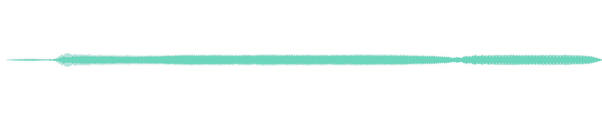
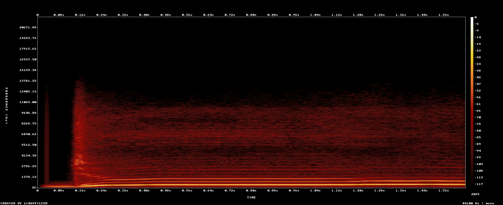

Blue
Decision neededA · CURRENT RUNTIME
Current game sound
Concept-video cut · playing in the game now
Technical gate: passed
B · H3 CANDIDATE
New clean-source sound
H3 vocal candidate · not yet used by the game
Technical gate: passed
Target syllable: doo Whisper heard from B: Doooooooooooooooooooooooooooooooooooooooooooooooooooooooooooooooooooooooooooooooooooooooooooooooooooooooooooooooooooooooooooooooooooooooooooooooooooooooooooooooooooooooooooooooo…
Whisper: completed · human dry-vocal/isolation review: pending
Show H3 waveform and automated evidence
duration: pass mono: pass nonEmpty: pass notClipped: pass sampleRate: pass

